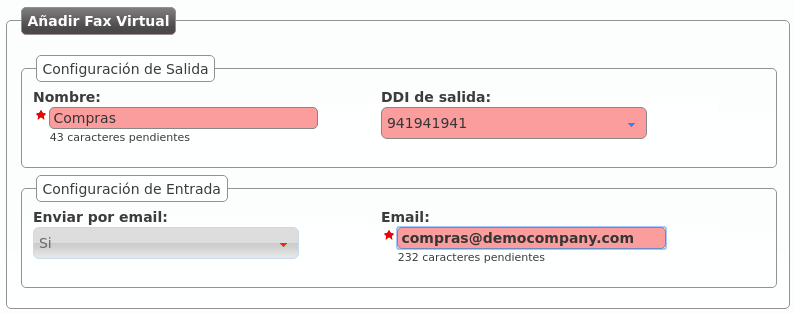
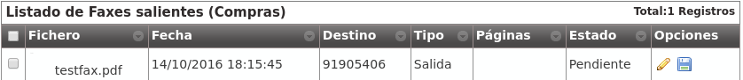

Virtual Fax System¶
IvozProvider includes a simple but efficient faxing solution that allows:
- Sending PDF files via Fax.
- Receiving faxes through email or check them through the web portal.
Error
IvozProvider uses T.38 for both sending and receiving faxes. Brand Operator must use peering contracts that have support for it.
Creating a virtual fax¶
This is the interface that turns up when we create a new fax in section Company configuration > Virtual Faxes:
Fields are nearly self-explanatory:
- Name
- Used by remaining section to reference a fax
- Email address when we want to receive incoming faxes (if we check ‘Send by email’)
- Outbound DDI
- DDI used as source number for outgoing faxes
To receive faxes in this DDI, we need to point it to our new fax in the section DDIs:

Brand Operator can choose one or more Outgoing Routes for sending faxes:

This route applies to all faxes sent by selected company (or for all companies).
Note
load-balancing y failover logics described in previous sections apply to faxes too.
Important
If no fax-specific route is defined, faxes will be routed using standard call routes.
Sending a fax¶
Sending a fax is an easy task. First, we upload de PDF file and set the destination:

The list shows the fax and its status:
Incoming faxes display¶
Apart from being received by mail, faxes can be watched and downloaded within the web portal too: